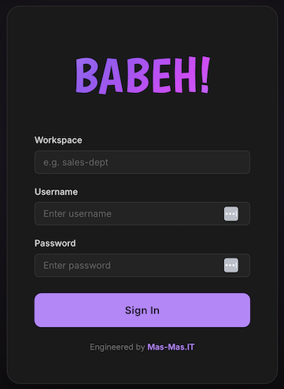
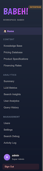
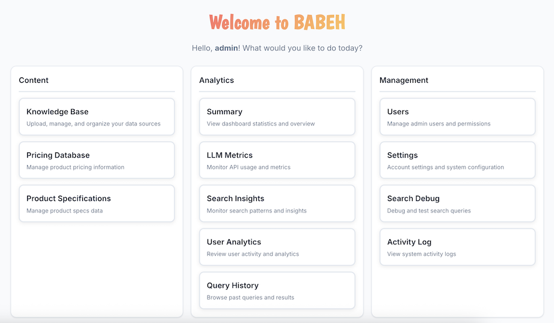

Getting Started
Learn how to log in, navigate the admin dashboard, and begin managing your knowledge base.
What is BABEH?
BABEH (Knowledge Base as a Service) is an intelligent document management and AI-powered search platform. It allows you to upload documents, manage product pricing and specifications, and provide an AI chatbot that answers questions based on your data — with full source citations.
System Architecture
BABEH uses a hybrid search approach combining semantic understanding (Vector search) with keyword matching (BM25) to deliver highly relevant results. Here's how the system fits together:
PDF, TXT] --> C[Chunking Engine] B[ Ingest URLs
Web Scraping] --> C C --> D[Vector Embeddings] C --> E[FTS5
BM25 Index] end subgraph "Data Management" F[ Pricing Database] --> D F --> G[Pricing FTS5] H[ Product Specs] --> D H --> I[Product Specifications FTS5] J2[ Financing Rates] --> K2[Financing FTS5] end subgraph "Query Pipeline" J[ User Query] --> K{Intent Router} K --> L[Vector Search
Semantic] K --> M[BM25 Search
Keyword] K --> N[Pricing Search] K --> O[Spec Search] K --> O2[Financing Search] L --> P[Fusion + Threshold] M --> P N --> P O --> P O2 --> P P --> Q[ LLM
Bedrock / Gemini] Q --> R[ Response
with Citations] end style A fill:#3B82F6,color:#fff style B fill:#3B82F6,color:#fff style D fill:#8B5CF6,color:#fff style E fill:#F59E0B,color:#fff style J2 fill:#06B6D4,color:#fff style K2 fill:#F59E0B,color:#fff style Q fill:#22C55E,color:#fff style R fill:#22C55E,color:#fff
Logging In
Accessing the Admin Panel
Open your browser and navigate to the admin URL:
https://workspace.babeh.com/admin/You'll see the login page with the BABEH logo. Enter your username and password.

Default Credentials
The system ships with pre-defined credentials.
Change this immediately after your first login! A warning banner will appear
on the dashboard until you update your password.
Changing Your Password
- Log in with the default or current credentials.
- Navigate to Users from the sidebar (superadmin) or locate the "Change My Password" card on the Users page.
- Enter your current password, then your new password.
- Click Change Password to save.
Passwords are hashed with bcrypt, which has a maximum of 72 bytes. Longer passwords will be silently truncated.
Session & Token
After login, a JWT token is issued that expires after 8 hours. You'll be automatically logged out when the token expires and redirected to the login page. There is no refresh token — simply log in again.
Navigating the Dashboard
Sidebar Navigation
The left sidebar is your primary navigation. It's organized into sections:
Directly below the BABEH logo you'll see two labels:
- Workspace — your project or deployment name, set via the
WORKSPACE_NAMEenvironment variable. Useful when running multiple BABEH deployments for different brands or clients. - Plan badge — shows the active subscription tier (Starter, Professional, or Enterprise). The badge is color-coded and reflects which features are enabled for this deployment.
| Section | Pages | Description |
|---|---|---|
| Home | Home | Welcome page with quick stats and navigation cards |
| Content | Knowledge Base Pricing Database Product Specifications Finance Rates | Upload, manage, and organize your data sources |
| Analytics | Summary LLM Metrics Search Insights User Analytics Query History | Monitor usage, performance, and search patterns |
| Management | Users Activity Log Settings Search Debug | System configuration and administration |

Some menu items are hidden based on your role. For example, Users and Activity Log are only visible to superadmin users. See Roles & Permissions for the full access matrix.
Welcome Page
The welcome page (Home) provides:
- Personalized greeting with your username
- Quick statistics — Total queries, documents, vector embeddings, and pricing records
- Navigation cards — Grouped by Content Management, Analytics & Reports, and System Management

Dark Mode
Toggle dark mode using the / button. Your preference is saved in the browser and persists across sessions. On first visit, the system respects your OS preference.
User Roles Overview
BABEH has four user roles, each with different access levels:
| Role | Description | Primary Use |
|---|---|---|
| superadmin | Full system access | System administrators who manage users, schemas, and monitor all activity |
| manager | Content + analytics access | Team leads who manage content and review analytics |
| analyst | Analytics + settings access | Data analysts who review performance and tune settings |
| editor | Content management only | Content editors who upload documents and manage pricing/specs data |
See the Roles & Permissions page for a complete feature-by-feature access matrix.
Plan Tiers
BABEH deployments are licensed under one of three plan tiers. Plans control which features are available and enforce monthly usage limits. Plans are configured via environment variables in backend/.env — there is no plan management UI.
| Feature | Starter | Professional | Enterprise |
|---|---|---|---|
| Pricing Database | ✅ | ✅ | ✅ |
| Product Specifications | ❌ | ✅ | ✅ |
| Financing Rates | ❌ | ✅ | ✅ |
| Query History | ❌ | ✅ | ✅ |
| Search Insights | ❌ | ✅ | ✅ |
| User Analytics | ❌ | ✅ | ✅ |
| Activity Log | ❌ | ✅ | ✅ |
| Search Debug | ❌ | ✅ | ✅ |
| API Key Access | ❌ | ✅ | ✅ |
| BYOK (Bring Your Own Key) | ❌ | ❌ | ✅ |
| SAML / SSO | ❌ | ❌ | ✅ |
| Monthly Query Quota | Limited (hard block) | High (soft warning) | Unlimited |
Accessing a page or API endpoint disabled by the plan returns 403 Forbidden. On the Starter plan, exceeding the monthly query quota returns 429 Too Many Requests. Professional and Enterprise plans receive a soft X-Quota-Warning header instead.
First Steps Checklist
After logging in for the first time, follow this checklist to get up and running:
- Change the default password
Go to Users → Change My Password. This removes the security warning banner. - Configure your LLM provider
Go to Settings → select AWS Bedrock or Google Gemini as your AI provider. - Upload your first document
Go to Knowledge Base → drag a PDF or TXT file into the upload area. - Test a search query
Use the Search Debug page to verify your document is searchable and results are relevant. - Embed the widget
Copy the widget snippet from the Widget documentation and add it to your website.